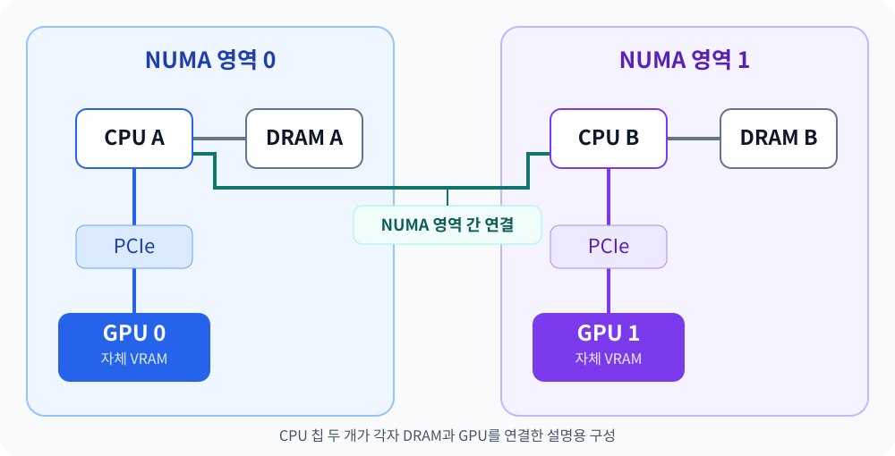

GPU 두 장을 사용하는 프로그램을 실행하기 전에 다음 명령으로 장치 사이의 연결 구조를 확인할 수 있습니다.
nvidia-smi topo -m
Python 코드에서는 같은 명령을 다음처럼 표현합니다.
["nvidia-smi", "topo", "-m"]
이는 하나의 문자열이 아니라, 실행할 프로그램과 인수를 나눈 목록입니다.
nvidia-smi: NVIDIA GPU의 상태와 정보를 조회하는 프로그램topo: 장치 사이의 연결 구조인 토폴로지(Topology) 조회-m: 연결 관계를 행렬 형태의 표(Matrix)로 출력
이 명령이 필요한 이유는 같은 서버에 GPU 여러 장을 꽂았더라도, GPU 사이의 연결 경로가 항상 같지는 않기 때문입니다.
먼저 출력 전체를 살펴보자
다음은 A40 GPU 두 장이 있는 서버에서 나온 출력입니다. 가독성을 위해 열 간격을 정리했습니다.
GPU0 GPU1 NIC0 CPU Affinity NUMA Affinity GPU NUMA ID
GPU0 X SYS SYS 0-23,48-71 0 N/A
GPU1 SYS X NODE 24-47,72-95 1 N/A
NIC0 SYS NODE X
NIC Legend:
NIC0: rocep177s0f0
이 표는 두 부분으로 나눠 읽으면 됩니다.
| 부분 | 보여주는 정보 |
|---|---|
왼쪽의 GPU0, GPU1, NIC0 |
장치끼리 어떤 경로로 연결돼 있는가? |
| 오른쪽의 Affinity·NUMA 컬럼 | 각 GPU와 가까운 CPU·메모리 영역은 어디이며, GPU 자체의 NUMA ID는 있는가? |
GPU0과 GPU1은 GPU 장치입니다. NIC0은 네트워크 인터페이스이며, 아래의 NIC Legend가 실제 이름과 연결해 줍니다.
표의 왼쪽은 행의 장치와 열의 장치가 만나는 칸을 읽습니다. 예를 들어 GPU0 행과 GPU1 열의 SYS는 GPU 0과 GPU 1 사이의 연결 관계입니다.
X는 자기 자신입니다. GPU0과 GPU0이 만나는 칸에 있는 X는 연결 실패를 뜻하지 않습니다.
그렇다면 SYS와 NUMA는 무엇일까요? 이를 이해하려면 서버 내부의 CPU와 메모리 구조부터 알아야 합니다.
1. 같은 서버의 메모리라도 CPU에서 접근하는 경로가 다르다
서버에는 하나의 마더보드에 CPU 칩을 여러 개 장착하는 구성이 있습니다. 각 CPU 칩 안에는 여러 코어가 있고, 메모리 컨트롤러를 통해 RAM에 접근합니다.
다음은 CPU 칩 두 개가 각각 자기 쪽 메모리를 가진 설명용 구성입니다.
CPU A ─ 메모리 컨트롤러 ─ DRAM A
│
└──── CPU 간 연결 ──── CPU B ─ 메모리 컨트롤러 ─ DRAM B
여기서 메모리는 서버의 RAM인 DRAM입니다. CPU 내부의 SRAM 기반 캐시나 GPU의 VRAM을 말하는 것이 아닙니다.
CPU A 안의 코어는 DRAM A와 DRAM B 모두에 접근할 수 있습니다. 다만 경로가 다릅니다.
- DRAM A에는 자기 CPU 쪽 메모리 컨트롤러를 통해 접근합니다.
- DRAM B에는 CPU 간 연결을 건너 CPU B 쪽 메모리 컨트롤러를 통해 접근합니다.
이때 CPU B의 코어가 대신 데이터를 읽어주는 것은 아닙니다. CPU B 쪽의 연결 장치와 메모리 컨트롤러를 거치는 것입니다.
CPU A를 기준으로 DRAM A는 로컬 메모리, DRAM B는 원격 메모리입니다. CPU B에서는 반대입니다.
원격이라고 해도 다른 서버에 있는 메모리는 아닙니다. 같은 서버 안에서 추가 연결을 거쳐 접근하는 메모리라는 뜻입니다.
2. NUMA는 메모리 접근 비용이 균일하지 않은 구조다
NUMA는 Non-Uniform Memory Access, 즉 균일하지 않은 메모리 접근이라는 뜻입니다.
같은 서버의 RAM이라도 어느 CPU가 어느 메모리에 접근하는지에 따라 지연 시간과 사용할 수 있는 대역폭이 달라집니다. 일반적으로 가까운 메모리에 접근하는 편이 유리합니다. Linux NUMA 설명
운영체제는 이런 CPU·메모리 등의 자원 영역을 NUMA Node로 구분합니다. 여기서 Node는 Kubernetes의 서버 단위 Node가 아니라 한 서버 내부의 자원 영역입니다.
앞선 예시에서는 다음처럼 생각할 수 있습니다.
NUMA 영역 0: CPU A 쪽 코어들과 DRAM A
NUMA 영역 1: CPU B 쪽 코어들과 DRAM B
다만 CPU 칩 하나가 반드시 NUMA Node 하나와 일치하지는 않습니다. CPU 칩 하나 안에서도 NUMA 영역을 여러 개로 나눌 수 있습니다.
따라서 출력에 NUMA 번호 0, 1이 나타났다는 사실만으로 물리 CPU 칩도 두 개라고 확정하면 안 됩니다.
3. GPU가 NUMA 영역에 연결됐다는 것은 그 영역 쪽에 가깝다는 뜻이다
GPU는 일반적으로 PCIe라는 하드웨어 연결을 통해 서버와 연결됩니다. 어느 쪽 PCIe에 붙어 있느냐에 따라 GPU와 가까운 CPU·메모리 영역도 달라집니다.
앞선 설명용 구성에 GPU를 추가하면 다음처럼 표현할 수 있습니다.

“GPU 0이 NUMA 영역 0에 연결됐다”는 말은 NUMA라는 부품에 GPU를 꽂았다는 뜻이 아닙니다.
GPU 0이 NUMA 영역 0 쪽의 PCIe 연결에 붙어 있어, 그 영역의 CPU·메모리와 가까운 관계라는 뜻입니다.
다른 영역의 CPU에서도 GPU를 사용할 수 있지만, 접근 경로가 달라질 수 있습니다. 특정 NUMA 영역만 해당 GPU를 사용할 수 있다는 독점 관계는 아닙니다.
또한 GPU는 자체 VRAM을 갖습니다. GPU가 어느 NUMA 영역과 가깝다는 사실이 GPU VRAM과 서버 DRAM이 같은 메모리라는 뜻은 아닙니다.
4. SYS는 GPU 사이의 경로가 NUMA 영역 간 연결까지 거친다는 뜻이다
이제 출력의 왼쪽을 다시 읽을 수 있습니다.
GPU0 GPU1 NIC0
GPU0 X SYS SYS
GPU1 SYS X NODE
NIC0 SYS NODE X
여기서 사용하는 연결 기호는 다음과 같습니다.
| 기호 | 의미 |
|---|---|
X |
자기 자신 |
PIX |
최대 하나의 PCIe 브리지를 거치는 관계 |
PXB |
여러 PCIe 브리지를 거치지만 PCIe Host Bridge는 거치지 않는 관계 |
PHB |
PCIe Host Bridge를 거치는 관계 |
NODE |
같은 NUMA 영역 안에서 PCIe Host Bridge 사이의 연결을 거치는 관계 |
SYS |
PCIe와 함께 NUMA 영역 간 연결도 거치는 관계 |
NV# |
여러 NVLink로 묶인 연결. #은 링크 수 |
PCIe Host Bridge는 CPU·메모리 쪽 시스템과 PCIe 장치들을 이어주는 연결부로 이해하면 됩니다. NVIDIA 토폴로지 기호 설명
예시에서 GPU 0과 GPU 1 사이에는 SYS가 표시됐습니다. 이는 대략 다음 경로를 뜻합니다.
GPU 0 → PCIe → NUMA 영역 간 연결 → PCIe → GPU 1
SYS는 단순히 “같은 시스템에 있다”는 뜻도, “서로 다른 서버에 있다”는 뜻도 아닙니다. 두 장치 사이의 연결이 NUMA 영역 사이의 연결까지 포함한다는 뜻입니다.
GPU 1과 NIC0 사이의 NODE는 이와 다릅니다. 두 장치의 연결이 같은 NUMA 영역 안에서 PCIe Host Bridge 사이를 거치는 관계라는 뜻입니다.
연결 경로와 실제 데이터 전송 방식은 다르다
GPU끼리 데이터를 주고받을 때는 지원되는 환경에서 P2P(Peer-to-Peer)를 사용할 수 있습니다. 이 경우 서버 DRAM에 중간 복사하지 않고 GPU 메모리 사이에서 데이터를 전달할 수 있습니다.
여기서 “직접”은 중간 하드웨어가 없다는 뜻이 아닙니다. PCIe 연결 장치 등을 거치더라도, 서버 DRAM에 임시 저장하는 단계를 생략할 수 있다는 의미입니다. CUDA 다중 GPU 통신 설명
따라서 SYS라고 해서 반드시 CPU 메모리에 중간 복사한다거나 CPU 코어가 데이터를 직접 옮긴다고 판단하면 안 됩니다.
표는 하드웨어 연결 관계를 보여줍니다. 실제 프로그램이 P2P를 쓰는지, 호스트 메모리를 경유하는지는 별도로 확인해야 합니다.
5. Affinity 컬럼은 GPU와 가까운 CPU·메모리를 알려준다
이제 표의 오른쪽을 살펴보겠습니다.
CPU Affinity NUMA Affinity GPU NUMA ID
GPU0 0-23,48-71 0 N/A
GPU1 24-47,72-95 1 N/A
CPU Affinity: 가까운 논리 CPU 번호 목록
GPU 0의 0-23,48-71은 논리 CPU 번호 023과 4871이 이 GPU와 가까운 CPU 집합이라는 뜻입니다.
이 번호는 CPU 칩 번호가 아닙니다. 운영체제가 작업을 배정할 수 있는 논리 CPU 번호입니다. 하이퍼스레딩 같은 기능을 사용하면 물리 코어 하나가 논리 CPU 두 개로 보일 수도 있습니다. NVIDIA CPU Affinity 설명
GPU에서 계산하더라도 CPU가 데이터를 준비하거나 GPU 작업을 제출하는 일이 필요합니다. CPU Affinity는 이런 CPU 작업을 어디에 배치할지 판단할 때 참고할 수 있습니다.
다만 이 표에 표시됐다고 vLLM 프로세스가 이미 해당 CPU들에서만 실행되도록 고정된 것은 아닙니다.
표의 CPU Affinity는 하드웨어상 가까운 관계이고, 프로그램을 특정 CPU들에서만 실행하도록 제한하는 설정은 별개입니다.
NUMA Affinity: 가까운 호스트 메모리의 NUMA 영역
예시에서는 GPU 0의 NUMA Affinity가 0, GPU 1은 1입니다.
이는 각 GPU와 가까운 호스트 메모리의 NUMA 영역 번호입니다. CPU Affinity와 함께 읽으면 다음처럼 정리할 수 있습니다.
GPU 0
├─ 가까운 논리 CPU: 0-23,48-71
└─ 가까운 호스트 메모리 영역: NUMA 0
GPU 1
├─ 가까운 논리 CPU: 24-47,72-95
└─ 가까운 호스트 메모리 영역: NUMA 1
이 정보 역시 그쪽 메모리만 사용할 수 있다는 제한을 뜻하지 않습니다.
GPU NUMA ID: GPU 자체에 해당하는 NUMA ID
NUMA Affinity와 GPU NUMA ID는 다른 정보입니다.
- NUMA Affinity: GPU와 가까운 호스트 메모리 영역은 어디인가?
- GPU NUMA ID: GPU 자체에 해당하는 NUMA ID가 있는가?
예시의 N/A는 GPU 자체의 NUMA ID가 적용되지 않거나 제공되지 않는다는 표시입니다. GPU가 없거나, GPU와 가까운 NUMA 영역이 없다는 뜻은 아닙니다. NVIDIA NUMA 조회 설명
따라서 GPU NUMA ID가 N/A인 GPU도 NUMA Affinity는 0이나 1로 표시될 수 있습니다.
6. 처음의 출력을 하나의 설명으로 읽어보자
처음에 확인한 표는 다음과 같았습니다.
GPU0 GPU1 NIC0 CPU Affinity NUMA Affinity GPU NUMA ID
GPU0 X SYS SYS 0-23,48-71 0 N/A
GPU1 SYS X NODE 24-47,72-95 1 N/A
NIC0 SYS NODE X
이를 문장으로 풀면 다음과 같습니다.
GPU 0은 논리 CPU
0-23,48-71및 NUMA 메모리 영역 0과 가깝습니다. GPU 1은 논리 CPU24-47,72-95및 NUMA 메모리 영역 1과 가깝습니다.GPU 0과 GPU 1 사이의 연결은
SYS이므로 NUMA 영역 간 연결까지 거칩니다. GPU 1과 NIC0 사이의 연결은 같은 NUMA 영역 안의NODE관계입니다.두 GPU 자체의 NUMA ID는
N/A로 표시됩니다.
반면 이 표만으로는 다음을 확정할 수 없습니다.
- 물리 CPU 칩이 정확히 몇 개인지
- vLLM 프로세스가 어떤 CPU에서 실행 중인지
- 실제 GPU 통신이 어떤 전송 방식을 사용하는지
- GPU 간 통신 속도가 얼마나 나오는지
nvidia-smi topo -m은 성능 측정 결과가 아니라, 성능을 해석하기 위한 연결 지도입니다.
여러 GPU로 계산을 나누면 GPU 사이에서 결과를 교환하는 비용도 생깁니다. 이 명령을 먼저 확인하는 이유는 GPU가 몇 장인지뿐 아니라, 그 GPU들이 어떤 경로로 협력해야 하는지 알아두기 위해서입니다.